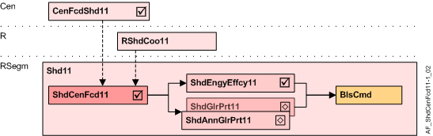

Shading central facade function (ShdCenFcd11)
Overview
The application function "Shading central facade function 11, for automatic" (ShdCenFcd11) processes the façade data required for the automatic shading function.

CenFcdShd11 | Central facade shading for automatic 11 |
RShdCoo11 | Room shading coordination 11 |
ShdCenFcd11 | Shading central facade function 11, for automatic |
ShdEngyEffcy11 | Shading energy efficiency 11, thermal protection |
ShdGlrPrt11 | Shading anti-glare protection 11 |
BlsCmd | Blinds command |
Function
This AF receives the sun tracking position and the weather data for a façade from the central AF CenFcdShd11 and pre-processes it for further use by energy efficiency (AF ShdEngEffcy11) and/or glare protection (AF ShdGlrPrt11 or ShdAnnGlrPrt11).
This AF requires the existence of a façade-specific instance of the central AF CenFcdShd11 to work properly.
Configuration
None (configured in CenFcdShd11).
Interface
Interface | Description | Type | Ref. | Owned by |
|---|---|---|---|---|
SolRdnCnd | Solar radiation condition 1:None | MCalcVal | ● | - |
GlrCnd | Glare condition 1:None | MCalcVal | ● | - |
BlsOp | Blinds operation 1:Move up | MCalcVal | ● | - |
BlsPosNr | Blinds position number 1:P1: Visual protection | MCalcVal | ● | - |
BlsHgt | Blinds height | ACalcVal | ● | - |
SlatAgl | Slat angle | ACalcVal | ● | - |
ShdCenFcd | Shading central facade function | GrpMbr | ● | - |
Engineering and commissioning
- No configuration is required in this AF.
The sun tracking function is configured in the central façade AF CenFcdShd11. - The AF is required if either energy efficiency (AF ShdEngEffcy) or glare protection (AF ShdGlrPrt) are present.
Troubleshooting
Verify the chart function in CFC: All received values can be viewed on the chart outputs.
Technical hints
The sun tracking position is a structure of 4 variables
- Blinds operation
- Blinds predefined position number
- Blinds height
- Slats angle
Synchronization and verification is required since these variables are distributed independently.
A set of variables is valid, if
- All variables required for the specific blinds operation are received and
- The time between the variables received is less than 10 sec and
- The blinds operation is {Goto height, Goto angle, Goto height and angle, Goto predefined position}
A valid set of variables is forwarded to the chart outputs, and the variables remain unchanged until the next valid set of variables is received.